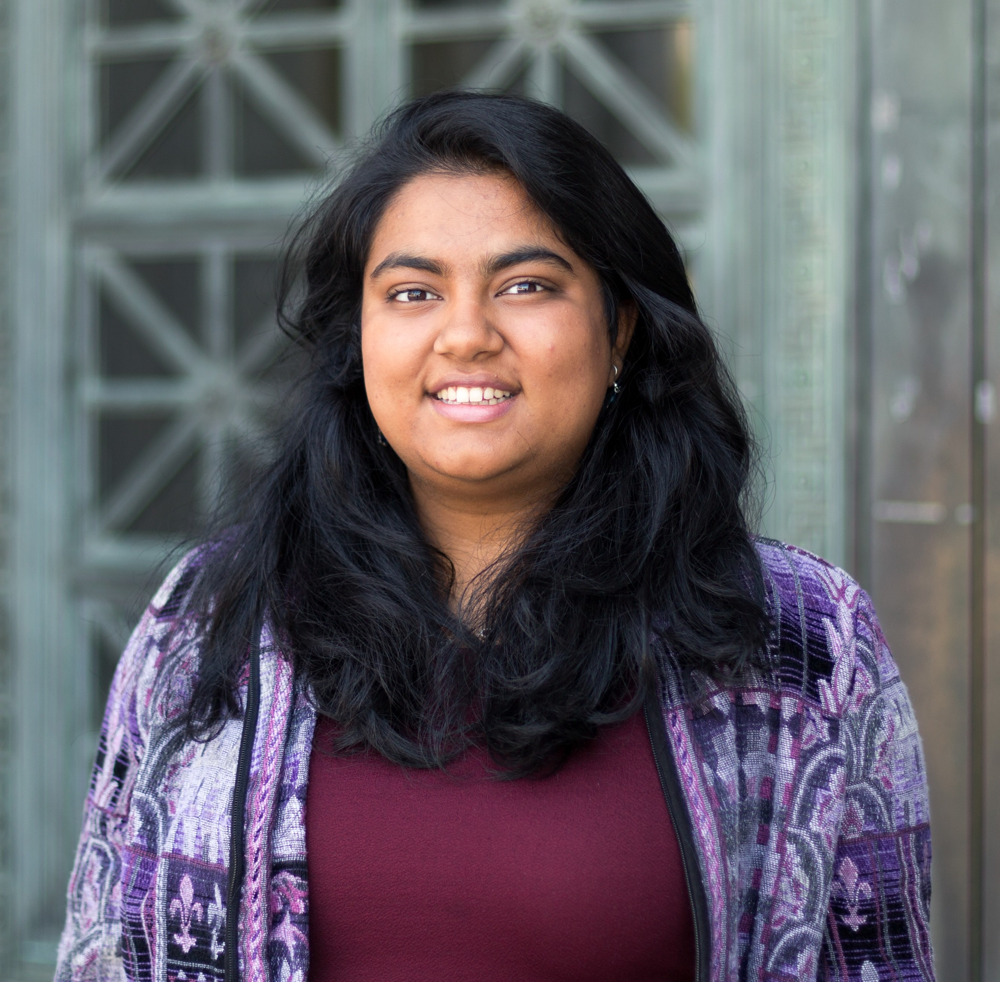

Staff
Instructors¶
 Fahad Kamran (bio) Fahad has been involved with Data 8 for about 3 years and is excited to meet you all this summer!
fhdkmrn@berkeley.edu
OH: Monday 2pm-3pm, Wednesday 10:30am-11:30am in 416 Evans
|

Vinitra Swamy (bio) Vinitra graduated from UC Berkeley with an M.S. in EECS and B.A. in Computer Science. Her research is in data science, specifically focused on AI and ML for large scale computing education. She is very excited to meet you all this summer! During her 3 years at Berkeley, Vinitra has been a 4 time GSI for Data 8.
vinitra@berkeley.edu
OH: Monday 10:30am-11:30am, Wednesday 2pm-3pm in 416 Evans
|
Teaching Assistants (uGSIs)¶
|
Claire Zhang (bio) Claire is a third year studying English. This is her second semester TA-ing for Data 8 and her third semester on staff. She's really excited to get to know everyone, and hopes you'll enjoy the class as much as she did! Outside of teaching, Claire loves playing taiko and drawing.
clairezhang@berkeley.edu
Lab: MW 11am-1pm in Cory 105, MW 1pm-3pm in Cory 105
OH: Friday 1pm-4pm
|
Harikaran Subbaraj (Hari) (bio) Hari is a 3rd year EECS student who is really excited to teach Data8 again! He is a huge Warriors fan and an avid comic reader. In his free time, Hari enjoys reading (high fantasy and science fiction), debating with strangers on reddit, and taking long naps.
hsubbaraj@berkeley.edu
Lab: MW 1pm-3pm in Evans 458, MW 3pm-5pm in 458 Evans
OH: Tuesday 12pm-2pm, Thursday 1pm-2pm
|
Howard Ki (bio) Howard is a third year CS major from South Florida. He really likes listening to musicals, eating Indian food, and hugging beautiful dogs. This will be his third semester as a part of Data 8 course staff, and he is looking forward to meeting all of you this semester!
howardki888@berkeley.edu
Lab: MW 11am-1pm in Evans B6, MW 1pm-3pm in Evans B6
OH: Tuesday 2pm-4pm, Thursday 12pm-1pm
|
 Rohan Narain (bio) Rohan is a rising 3rd year studying statistics and data science. He's interested in a variety of applications of statistics from economics to sports analytics. He is a passionate baseball fan, and he can talk all day about the Giants (and the Warriors too)! He is very passionate about statistics, so feel free to ask him questions about the statistics community at Cal!
narain.rohan@berkeley.edu
Lab: MW 3pm-5pm in Evans B6, MW 5pm-7pm in 105 Cory
OH: Thursday 2pm-4pm, Friday 12pm-1pm
|
 Ryan Roggenkemper (bio) Ryan is an almost-3rd year CogSci & CS major from Los Gatos, CA. He enjoys cooking (because it usually leads to eating things, which is pretty great), music, and playing a sport/game called jugger. He's also a bit too good at procrastinating (please don't follow his example).
rroggenkemper@berkeley.edu
Lab: MW 11am-1pm in Evans 458, MW 3pm-5pm in Cory 105
OH: Tuesday 3pm-5pm, Thursday 3pm-4pm
|
Tutors¶
 Aidan De Angelis (bio) Aidan is a third year from Davis, California studying Computer Science. He came to Cal to study gastroenterology and mind-gut interactions, but fell in love with CS and Data Science after taking Data8 his first semester. He likes hiking, paintball, and reading science fiction. He loves Data8 and hopes will do too!
aidandeangelis@berkeley.edu
OH: Tuesday 1pm-2pm, Friday 1pm-2pm
|
Iman Eslami (bio) Iman is a rising junior studying Economics and Data Science. He hails from the Mission Viejo, CA in the OC but likes to tell people he's from Chicago since he was born there and it sounds cooler. Iman enjoys both playing and watching basketball and soccer and fancies an active lifestyle. He also likes to read about politics, go on Wikepedia adventures, and plan his future travel destinations. He has a wide range of academic interests and is willing to learn about almost anything.
imaneslami@berkeley.edu
OH: Tuesday 2pm-4pm
|
 Lillian Louie (bio) Lillian is a sophomore who enjoys watching asian dramas (Korean, Chinese, Japanese, etc.). She loves milk tea and is always down for a boba run. It’s her first time as a course staff and she is excited to make a lot of new friends!
lillianlouie@berkeley.edu
OH: Tuesday 4pm-5pm, Thursday 2pm-3pm
|
 Sabrina Liu (bio) Sabrina is a fourth year studying Economics, Statistics, and Music. She loves everything about her hometown of Pittsburgh, especially the sports teams in it. You'll never hear her call carbonated beverages anything other than pop. The only time 'soda' is acceptable is when referencing Soda Hall.
liusabrina@berkeley.edu
OH: Friday 2pm-4pm
|
 Sathvik Nair (bio) Sathvik is a rising junior from San Jose, studying some changing combination of Computer Science, Cognitive Science, and Data Science. He is interested in applications of data science in the social sciences, and researches computational cognitive science. Outside of school, he likes to read, cook, play different instruments, and drink copious amounts of tea. He was a tutor last semester as well and is excited to be on staff this summer!
sathviknair@berkeley.edu
OH: Thursday 12pm-2pm
|
 Shoumik Jamil (bio) Shoumik is a senior studying Data Science and Cognitive Science. He loves watching sports and reading FiveThirtyEight in his spare time. Data 8 is his favorite course and he looks forward to sharing his enthusiasm for Data Science with everyone!
sjamil@berkeley.edu
OH: Tuesday 12pm-1pm, Friday 12pm-1pm
|